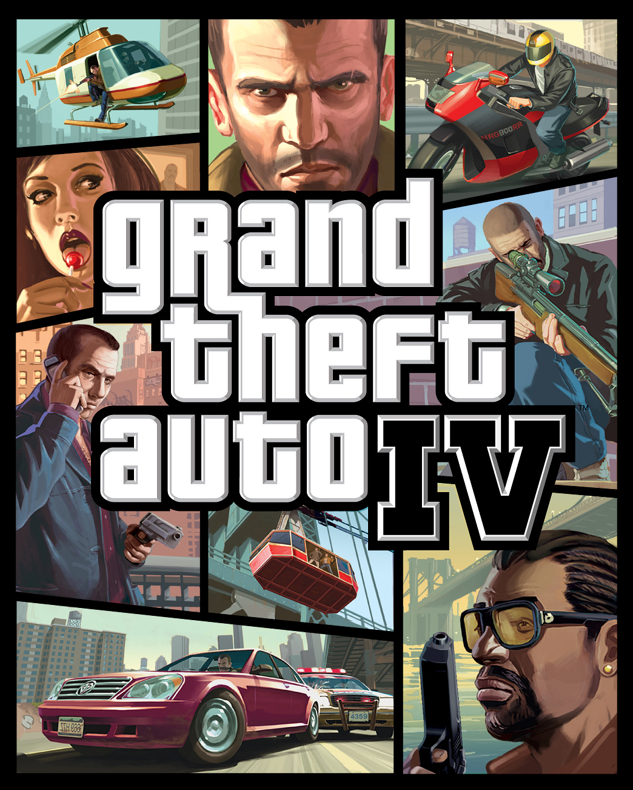

Grand Theft Auto IV
Grand Theft Auto IV is a third-person action adventure game that is the eleventh game in the Grand Theft Auto series although the eighth released for the PC. In Grand Theft Auto IV, players return to Liberty City, the setting of the original Grand Theft Auto and Grand Theft Auto III, where they take on the role of Niko Bellic, an Eastern European immigrant hoping to live the American Dream.
Like previous games in the series, Grand Theft Auto IV was both critically praised and commercially successful earning half a billion dollars in its first week of release in April for the Xbox 360 and PlayStation 3 consoles. Much like other games in the series, Grand Theft Auto IV is played in a large open world game environment that provides players the freedom to perform missions, side missions and jobs at their leisure. Players can travel about Liberty city on foot, by car or b a number of other modes of transportation, most of involving some sort of criminal activities.
The timeline for Grand Theft Auto IV takes place in 2008 but the storyline is unrelated to the connected storyline of GTA 3, GTA: Vice City and GTA: San Andreas and contains a much larger version of Liberty City. In GTA 4, Liberty City, which is based in New York City, has been divided into four boroughs to match the boroughs of NYC. Players will take on both story based missions that contain a set of objectives to move the overall storyline forward but there are countless side missions and jobs they can perform along the way. As in previous games, certain areas of the city are only unlocked when story based missions have been completed. The overall gameplay in GTA 4 also stays true to the series with most action occurring in the third person perspective. In fights, players can use all sorts of objects in melee attacks in addition to guns and explosives. One new feature in GTA 4 is a playable first person perspective mode that is available when driving or piloting vehicles.
Grand Theft Auto IV features both a single players story campaign mode, a multiplayer co-operative model and a competitive multiplayer mode that allows for up to 32 players to explore a portion of the single player world. Competitive multiplayer modes include deathmatch and street races. There were also two expansion packs released for GTA 4 each of which included two digital expansion packs The Lost and Damned and The Balad of Gay Tony.

© GTAGamelaunch 2017